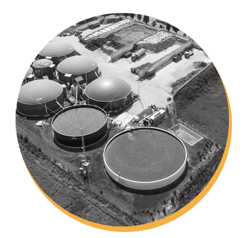

Renewable Energy
What is renewable energy?
Renewable energy is energy derived from natural sources that are replenished at a higher rate than they are consumed. Sunlight and wind, for example, are such sources that are constantly being replenished. Renewable energy sources are plentiful and all around us.
Fossil fuels - coal, oil and gas - on the other hand, are non-renewable resources that take hundreds of millions of years to form. Fossil fuels, when burned to produce energy, cause harmful greenhouse gas emissions, such as carbon dioxide.
Generating renewable energy creates far lower emissions than burning fossil fuels. Transitioning from fossil fuels, which currently account for the lion’s share of emissions, to renewable energy is key to addressing the climate crisis.
Renewables are now cheaper in most countries, and generate three times more jobs than fossil fuels.
Here are a few common sources of renewable energy:

SOLAR ENERGY
Solar energy is the most abundant of all energy resources and can even be harnessed in cloudy weather. The rate at which solar energy is intercepted by the Earth is about 10,000 times greater than the rate at which humankind consumes energy.
Solar technologies can deliver heat, cooling, natural lighting, electricity, and fuels for a host of applications. Solar technologies convert sunlight into electrical energy either through photovoltaic panels or through mirrors that concentrate solar radiation.
Although not all countries are equally endowed with solar energy, a significant contribution to the energy mix from direct solar energy is possible for every country.
The cost of manufacturing solar panels has plummeted dramatically in the last decade, making them not only affordable but often the cheapest form of electricity. Solar panels have a lifespan of roughly 30 years, and come in variety of shades depending on the type of material used in manufacturing.

WIND ENERGY
Wind energy harnesses the kinetic energy of moving air by using large wind turbines located on land (onshore) or in sea- or freshwater (offshore). Wind energy has been used for millennia, but onshore and offshore wind energy technologies have evolved over the last few years to maximize the electricity produced - with taller turbines and larger rotor diameters.
Though average wind speeds vary considerably by location, the world’s technical potential for wind energy exceeds global electricity production, and ample potential exists in most regions of the world to enable significant wind energy deployment.
Many parts of the world have strong wind speeds, but the best locations for generating wind power are sometimes remote ones. Offshore wind power offers tremendous potential.

GEOTHERMAL ENERGY
Geothermal energy utilizes the accessible thermal energy from the Earth’s interior. Heat is extracted from geothermal reservoirs using wells or other means.
Reservoirs that are naturally sufficiently hot and permeable are called hydrothermal reservoirs, whereas reservoirs that are sufficiently hot but that are improved with hydraulic stimulation are called enhanced geothermal systems.
Once at the surface, fluids of various temperatures can be used to generate electricity. The technology for electricity generation from hydrothermal reservoirs is mature and reliable, and has been operating for more than 100 years.
HYDROPOWER
Hydropower harnesses the energy of water moving from higher to lower elevations. It can be generated from reservoirs and rivers. Reservoir hydropower plants rely on stored water in a reservoir, while run-of-river hydropower plants harness energy from the available flow of the river.
Hydropower reservoirs often have multiple uses - providing drinking water, water for irrigation, flood and drought control, navigation services, as well as energy supply.
Hydropower currently is the largest source of renewable energy in the electricity sector. It relies on generally stable rainfall patterns, and can be negatively impacted by climate-induced droughts or changes to ecosystems which impact rainfall patterns.
The infrastructure needed to create hydropower can also impact on ecosystems in adverse ways. For this reason, many consider small-scale hydro a more environmentally-friendly option, and especially suitable for communities in remote locations.

OCEAN ENERGY
Ocean energy derives from technologies that use the kinetic and thermal energy of seawater - waves or currents for instance - to produce electricity or heat.
Ocean energy systems are still at an early stage of development, with a number of prototype wave and tidal current devices being explored. The theoretical potential for ocean energy easily exceeds present human energy requirements.
BIOENERGY
Bioenergy is produced from a variety of organic materials, called biomass, such as wood, charcoal, dung and other manures for heat and power production, and agricultural crops for liquid biofuels. Most biomass is used in rural areas for cooking, lighting and space heating, generally by poorer populations in developing countries.
Modern biomass systems include dedicated crops or trees, residues from agriculture and forestry, and various organic waste streams.
Energy created by burning biomass creates greenhouse gas emissions, but at lower levels than burning fossil fuels like coal, oil or gas. However, bioenergy should only be used in limited applications, given potential negative environmental impacts related to large-scale increases in forest and bioenergy plantations, and resulting deforestation and land-use change.